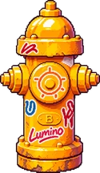

A world built on curiosity
Learn something. Make something.
Lumino is a STEAM learning adventure platform for learners, parents and guardians. Explore science, technology, engineering, arts and mathematics through workshop challenges. We’re building toward a learning resource center that helps families keep exploring together.
Learn, then apply
Each topic begins with a short, clear explanation. It then moves to a practical workshop challenge, and closes with a chance to recall what was learned.
Meet your tutors
-
Linda
Warm and methodical, Linda breaks ideas into clear steps and helps you reason through a challenge.
-
Charles
Relaxed and practical, Charles uses familiar examples to show how an idea works.
Choose who guides you through explanations, hints and recaps. You can switch tutors at any point in a lesson.
Try a lesson with Linda or CharlesDesign, test and revise
In a future workshop challenge, you could sketch two lantern layouts, test how much of a path each layout lights with the same number of power cells, and explain how your design helps people find their way. Then revise it using what you learned.
We want learners to bring that same judgment to AI-generated suggestions. Ask what a suggestion assumes, check it against evidence and decide what you would improve.
Find your path
The prototype starts with five subject maps that build skills for future STEAM challenges. Choose a subject and tell your tutor which ideas already feel familiar. Lumino uses your answers to suggest a starting point, which you are free to adjust. Open a subject to see the level to expect and some of the topics it covers.
Mathematics
Primary to lower secondary.
Number sense and fractions, ratio and proportion, geometry and measurement, and a first introduction to algebra.
Physics
Primary to lower secondary.
Forces and motion, energy and its transfers, light and sound, and the basics of electricity.
Chemistry
Primary to lower secondary.
States of matter, mixtures and how to separate them, acids and bases, and the difference between physical and chemical change.
Biology
Primary to lower secondary.
Living things and cells, plants and photosynthesis, the systems of the human body, and ecosystems.
English
Primary to lower secondary.
Reading comprehension, grammar and vocabulary, and how to structure clear writing.
Frequently asked questions
What is Lumino?
Lumino is a STEAM learning adventure platform. Today learners can explore five subjects through short explanations and workshop repairs. The planned resource center will help learners revisit concepts and give parents and guardians ideas for supporting learning at home.
Who are Linda and Charles?
Linda and Charles are Lumino’s scripted tutors. Linda gives structured explanations and Charles uses practical examples. You can switch tutors during a lesson.
How does a lesson work?
Each starter topic gives you a short explanation, a workshop challenge and a chance to recall what you learned.
How is my starting point chosen?
You pick a subject and tell your tutor which ideas feel familiar. Lumino suggests a starting point from your answers, and you can change it at any time.
Which subjects can I learn?
Mathematics, physics, chemistry, biology and English are available in the prototype today.
Is Lumino finished?
The early prototype is available now. More learning activities and a resource center for learners, parents and guardians are planned.

Lumino is in early development. The prototype is available to explore now.